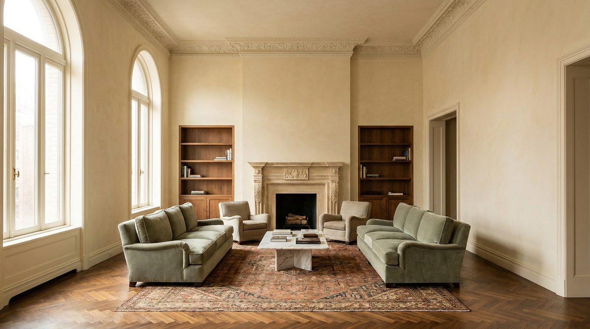

Atlante · INT-US-01 · Stati Uniti · USA
Prewar penthouse con terrazze, Park Avenue / Central Park West
Esempi · esterno e interno


Perché funziona
Il compratore dell'Upper East Side paga la provenienza, non l'ostentazione: il registro quiet vende il made in Italy come artigianato silenzioso — infissi, boiserie, spina di pesce — e tiene il prodotto lontano dal cliché 'old world'. Rischio: se il set diventa troppo europeo, il mobile italiano sembra un ospite e non il protagonista della scena.
Architettura · elementi riproducibili
- soffitto a 3,2-3,8 m con cornice a gola in gesso, 25-30 cm di sviluppo
- parquet a spina di pesce in noce, doghe 70 x 9 cm
- infissi a ghigliottina in legno, doppia anta, luce netta 1,5 x 2,2 m
- galleria d'ingresso di 12-18 mq che separa zona giorno e zona notte
- camino in pietra con mensola a 1,15 m
- arretramenti di facciata che diventano terrazze con parapetto in pietra
- porte di servizio nascoste a filo muro, una per ambiente
- tende in lino grezzo a tutta altezza, binario incassato
Verificato: 740 Park Avenue (Rosario Candela e Arthur Loomis Harmon, 1929-30), 19 piani, 31 unità tra cui duplex e triplex, con un penthouse su tre livelli.
Verificato: il San Remo (Emery Roth, 1929-30) ha 27 piani, torri gemelle su una base di 17 piani e arretramenti tra il 14° e il 17° piano che diventano terrazze.
Valutazione: 3,2-3,8 m è un parametro di set per il piano nobile del penthouse, non un dato rilevato; i piani ordinari prewar stanno più bassi.
Valutazione: spina di pesce e boiserie sono coerenti con l'epoca ma non documentate per uno specifico appartamento.
Luce
Prompt di generazione (EN)
Editorial interior photograph of an empty prewar penthouse living room, 3.4 m ceiling with a stepped plaster cornice, bone lime-plaster walls, herringbone walnut floor, two tall double-hung windows with sheer linen curtains on camera left, pale travertine fireplace surround, one sage-painted boiserie panel on the far wall, late morning east light raking across the floor at 35 degrees, soft-edged contact shadows, neutral white balance, camera at 1.35 m, two-point perspective with parallel verticals, 28 mm lens at f/6.3, 20 percent negative space above the mantel, matte surfaces, fine film grain, no people, no text, no logos